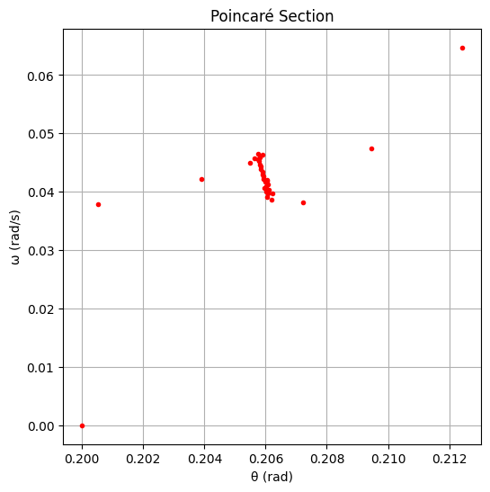

Forced Damped Pendulum Analysis
1. Theoretical Foundation
1: Starting Differential Equation
The motion of a forced damped pendulum is governed by the nonlinear second-order differential equation:
Where: - \(\theta(t)\) is the angular displacement. - \(b\) is the damping coefficient. - \(g\) is gravitational acceleration. - \(L\) is the length of the pendulum. - \(A\) is the amplitude of the external periodic force. - \(\omega\) is the angular frequency of the driving force.
2: Small-Angle Approximation
For small angles (\(\theta \ll 1\)), we can use the approximation:
Substitute into the original equation:
This is now a linear second-order nonhomogeneous ODE—a classic form of the driven damped harmonic oscillator.
3: General Solution (Small-Angle Linear Case)
The general solution is:
Homogeneous (Natural) Solution
Solve:
This describes the natural damped oscillations. The solution form depends on damping:
- Underdamped: \(b^2 < 4 \frac{g}{L}\)
where:
Particular (Forced) Solution
Try:
After substitution and solving, you find:
4: Resonance Condition
Resonance occurs when the driving frequency \(\omega\) approaches the natural frequency of the system:
At or near this frequency, the amplitude \(B\) of the steady-state oscillation becomes maximum. For very small damping (\(b \to 0\)), the amplitude can become very large.
5: Energy Implications of Resonance
When resonance occurs, the driving force efficiently transfers energy to the system. If not limited by damping, this would cause the system's energy to grow unbounded. Damping is essential to balance energy input and loss, resulting in steady-state oscillations instead of infinite growth.
2. Analysis of Dynamics
1. Governing Equation
The motion is described by the nonlinear, second-order, driven differential equation:
This equation models a forced damped pendulum. We now investigate the effects of its key parameters.
2. Influence of Key Parameters
Damping Coefficient \(b\)
- Low damping: Allows larger oscillations; more prone to resonance and chaotic behavior.
- High damping: Motion dies out or settles into low-amplitude oscillations.
- Moderate damping: Can lead to steady periodic behavior or quasi-periodic motion, depending on other parameters.
Driving Amplitude \(A\)
- Low amplitude: Typically leads to regular, periodic motion.
- Moderate amplitude: May induce quasi-periodic behavior.
- High amplitude: Often results in chaotic motion, especially when combined with low damping.
Driving Frequency \(\omega\)
- Near natural frequency: Resonance effects dominate (amplitude peaks).
- Off-resonance: Motion is often simpler or less energetic.
- Critical frequencies: Certain values cause the system to become chaotic or display strange attractors.
3. Types of Motion Observed
| Motion Type | Behavior | Conditions |
|---|---|---|
| Periodic | Repeats after a fixed time | Low \(A\), moderate \(b\), off-resonance |
| Quasi-periodic | Almost regular, with shifting phase | Slight mismatch between natural and driving frequency |
| Chaotic | Unpredictable, sensitive to initial conditions | High \(A\), low \(b\), near resonance |
4. Detecting Chaos: Physical Interpretations
- Sensitive Dependence on Initial Conditions: Two almost identical starting points lead to vastly different trajectories.
- Poincaré Section: A stroboscopic map showing whether the system lands on:
- A single point (periodic).
- A closed curve (quasi-periodic).
- Scattered points (chaos).
- Phase Portrait: A plot of \(\theta\) vs \(\dot{\theta}\):
- Regular motion creates closed loops.
- Chaos produces tangled trajectories.
- Bifurcation Diagram: As a parameter (e.g., \(A\) or \(\omega\)) varies, the system transitions from one steady state to multiple, eventually leading to chaos.
5. Interpretation in Real Systems
- Engineering: Systems must avoid chaotic regimes to prevent mechanical failure (e.g., bridges, engines).
- Climate Models: Quasi-periodic and chaotic behavior are common due to complex forcing patterns.
- Biological Rhythms: Can switch between periodic and chaotic under stress or disease.
3. Practical Applications
The dynamics of a forced damped pendulum serve as a foundational analogy for many physical and engineered systems where oscillations, damping, and external forces are present. Below are key examples:
1. Energy Harvesting Devices
Example: Piezoelectric energy harvesters in shoes, roads, or structural components.
Why it's similar: These devices involve damped mechanical systems driven by external periodic forces (e.g., walking).
Model connection:
- Energy input (walking) corresponds to the driving force:
$$ A \cos(\omega t) $$
- Damping represents energy losses, and the harvested power corresponds to the amplitude of oscillations.
2. Suspension Bridges & Building Oscillations
Example: The infamous Tacoma Narrows Bridge collapse.
Why it's similar: Wind acts as a periodic driving force; internal friction and air resistance provide damping.
Model connection:
The system can be modeled as:
$$ \theta'' + b \theta' + \frac{g}{L} \theta = A \cos(\omega t) $$
If the driving frequency matches a structural mode (resonance), large-amplitude oscillations can occur—even leading to failure.
3. Oscillating Electrical Circuits (Driven RLC Circuits)
Example: AC circuits with a resistor (\(R\)), inductor (\(L\)), and capacitor (\(C\)) driven by an alternating voltage.
Why it's similar: Mathematically analogous to the forced damped pendulum.
Electrical analogy:
The governing equation is:
$$ L \frac{d^2q}{dt^2} + R \frac{dq}{dt} + \frac{1}{C} q = V_0 \cos(\omega t) $$
This maps directly to the mechanical form:
$$ m \theta'' + b \theta' + k \theta = A \cos(\omega t) $$
4.Implementation
import numpy as np
import matplotlib.pyplot as plt
from scipy.integrate import solve_ivp
# Step 1: Simulation function
def forced_damped_pendulum(t, y, b, A, omega):
theta, omega_dot = y
dtheta_dt = omega_dot
domega_dt = -b * omega_dot - (9.81 / 1.0) * np.sin(theta) + A * np.cos(omega * t)
return [dtheta_dt, domega_dt]
def simulate_pendulum(theta0, omega0, b, A, omega_drive, t_max=100, dt=0.01):
t_span = (0, t_max)
t_eval = np.arange(0, t_max, dt)
y0 = [theta0, omega0]
sol = solve_ivp(forced_damped_pendulum, t_span, y0, args=(b, A, omega_drive),
t_eval=t_eval, method='RK45')
return sol.t, sol.y[0], sol.y[1]
# Step 2: Plotting function
def plot_all(t, theta, omega_dot, drive_freq):
theta = (theta + np.pi) % (2 * np.pi) - np.pi # Normalize
# Time series
plt.figure(figsize=(10, 4))
plt.plot(t, theta, label='θ(t)')
plt.plot(t, omega_dot, label='ω(t)', alpha=0.6)
plt.title('Time Series')
plt.xlabel('Time (s)')
plt.ylabel('Value')
plt.legend()
plt.grid(True)
plt.show()
# Phase portrait
plt.figure(figsize=(6, 6))
plt.plot(theta, omega_dot, '.', markersize=0.5)
plt.title('Phase Portrait')
plt.xlabel('θ (rad)')
plt.ylabel('ω (rad/s)')
plt.grid(True)
plt.show()
# Poincaré section
T = 2 * np.pi / drive_freq
poincare_times = np.arange(0, t[-1], T)
poincare_indices = [np.argmin(np.abs(t - pt)) for pt in poincare_times]
plt.figure(figsize=(6, 6))
plt.plot(theta[poincare_indices], omega_dot[poincare_indices], 'ro', markersize=3)
plt.title('Poincaré Section')
plt.xlabel('θ (rad)')
plt.ylabel('ω (rad/s)')
plt.grid(True)
plt.show()
# Step 3: Run the simulation and plot
t, theta, omega_dot = simulate_pendulum(
theta0=0.2, omega0=0.0,
b=0.3, A=1.2, omega_drive=2.0
)
plot_all(t, theta, omega_dot, drive_freq=2.0)



Explanation
1. Time Series Plot (\(\theta(t)\) and \(\omega(t)\))
This plot shows the angular position \(\theta(t)\) and angular velocity \(\omega(t)\) over time.
- The oscillations are regular and consistent, suggesting periodic behavior.
- The system has reached a steady state, where energy input from the driving force is balanced by damping.
2. Phase Portrait (\(\theta\) vs. \(\omega\))
This shows how the system evolves in state space.
- The near-perfect elliptical shape indicates regular, bounded, and stable motion.
- There is no sign of chaos; instead, the system follows a predictable trajectory.
3. Poincaré Section
This stroboscopically samples the system once per driving cycle.
- The clustering of points in a tight region indicates periodic or quasi-periodic behavior.
- If the system were chaotic, the points would be scattered without forming a structure.